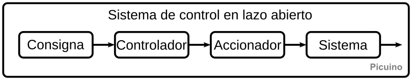
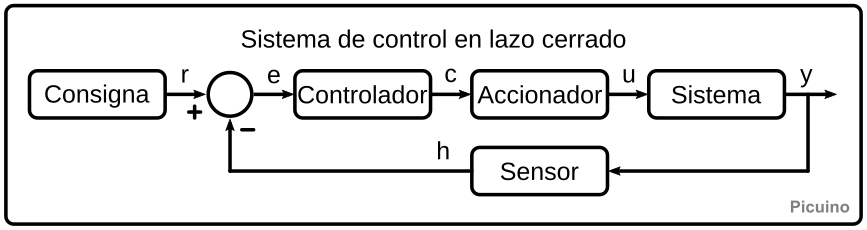

Control Automático¶
Los controladores o reguladores automáticos forman parte de muchos de los dispositivos que nos rodean, aunque no seamos conscientes de ello.
Podemos encontrar ejemplos de controladores en el termostato de la calefacción o del aire acondicionado, en el control de temperatura del horno o de la nevera, en el regulador de nivel de luz, en la dirección asistida de los automóviles, el sistema de parada en un piso de los ascensores o, incluso, en el sistema de llenado de agua de la cisterna del inodoro. Allí donde una velocidad, un movimiento, temperatura, presión o nivel se mantienen regulados, hay un controlador que realiza este trabajo.
Para referirse a este tipo de sistemas se utiliza la denominación de controladores automáticos o reguladores automáticos.
En esta página se van a revisar los diferentes componentes de un sistema de control automático y los diferentes tipos de control que existen, de lazo abierto y de lazo cerrado.
Elementos de un sistema de control en lazo abierto¶
En la siguiente imagen se muestra un esquema del sistema de control más sencillo, el control de lazo abierto.
{kind=link}
En este esquema se pueden reconocer cuatro bloques:
- Consigna
Es la parte del sistema que describe lo que deseamos obtener del controlador.
Por ejemplo, una consigna puede ser un mando manual en el que seleccionamos un tiempo de funcionamiento de 2 minutos en un microondas. Otro ejemplo sería el mando con el que seleccionamos la potencia de calentamiento que deseamos obtener en una vitrocerámica al cocinar.
- Controlador
Se encarga de recibir una señal de consigna o señal de referencia y convertirla en una señal que consiga que el sistema alcance la referencia deseada.
Un ejemplo de controlador es un temporizador que enciende y apaga el horno microondas cada pocos segundos para controlar su potencia.
- Accionador
Es el encargado de convertir la señal de control, que tiene poca potencia, en una acción sobre el sistema, con mayor potencia.
Volviendo al ejemplo del horno eléctrico, el accionador será la resistencia calefactora y el sistema de potencia que la enciende. En el caso de un servomecanismo, el accionador será el conjunto de transistores y el motor que mueven el mecanismo.
- Sistema
También llamado en ocasiones planta, es aquello que se desea controlar.
En un horno el sistema será la caja del horno en la que se desea controlar la temperatura. En el caso de un servomecanismo, el sistema será el motor y la caja reductora cuya posición se desea controlar.
En ocasiones la consigna, el controlador o el accionador no tienen límites bien definidos o no existen en algún sistema. En cualquier caso es interesante conocer estos elementos a la hora de identificar las diferentes partes de un sistema de control.
Ejemplos de sistemas de control en lazo abierto¶
Podemos encontrar ejemplos de sistemas de control en lazo abierto en múltiples dispositivos de nuestro entorno.
- Control de potencia de un horno microondas
La consigna es el mando giratorio con el que seleccionamos el tiempo de encendido.
El controlador está formado por un temporizador que enciende el horno y lo apaga al terminar el tiempo consignado.
El accionador es un magnetrón que produce las microondas que calientan la leche.
El sistema será, por ejemplo, el vaso de leche que se calienta en el interior del horno.
- Control de potencia de un calentador eléctrico de aire
La consigna es el mando que giramos para conseguir una potencia media o potencia completa.
El controlador es el interruptor que selecciona entre una o dos resistencias calefactoras.
El accionador está formado por las resistencias calefactoras y el ventilador.
El sistema es la habitación calentada por el aire caliente del calefactor.
- Control de intensidad de luz
La consigna es el potenciómetro o resistencia variable que se gira para conseguir mayor o menor luminosidad.
El controlador es un circuito electrónico que decide cuanto tiempo estará conectada la lámpara varias veces por segundo.
El accionador es un circuito electrónico de potencia y la lámpara que produce luz.
El sistema es la habitación con más o menos iluminación.
- Control de nivel de sonido en un equipo de audio
La consigna es el potenciómetro que se mueve para conseguir mayor o menor nivel de sonido.
El accionador es el amplificador y los altavoces del equipo de música.
El sistema es la habitación y el nivel de sonido que se consigue.
Uno de los controladores en lazo abierto más habituales es el temporizador. Este se puede encontrar en múltiples dispositivos como encendido temporizado de las luces de escalera de un edificio, apagado automático de escaleras automáticas, temporizador de un horno microondas, etc.
En los sistemas en lazo abierto se puede controlar que el sistema reciba del accionador más o menos potencia, pero no se puede controlar con exactitud el punto en el que se encontrará el sistema controlado.
En el caso del horno microondas, por ejemplo, no podemos estar seguros de la temperatura que alcanzará la leche en su interior. Tampoco con el calentador eléctrico de aire podemos conocer con exactitud la temperatura que alcanzará la habitación. En ambos casos el resultado final dependerá del tamaño del vaso o de la habitación, de la temperatura ambiente, del aislamiento, de la potencia total del calentador, etc.
Esta desventaja de los sistemas en lazo abierto no impide que se utilicen con mucha frecuencia por su gran sencillez y por ser muy robustos.
Elementos de un sistema de control en lazo cerrado¶
En la siguiente imagen se muestra un esquema de un sistema de control en lazo cerrado.
{kind=link}
Este tipo de sistema de control soluciona el problema de los sistemas en lazo abierto, que dependen del accionador, de las condiciones ambientales, etc. El nombre de lazo cerrado proviene de la señal del sensor que vuelve al controlador, cerrando el lazo de control. Los elementos del sistema de control en lazo cerrado son los mismos que los elementos del sistema de control en lazo abierto con dos añadidos:
- Sensor
El sensor mide el estado o variable a controlar en el sistema (posición, temperatura, humedad, etc.) Esto permite conocer el estado del sistema y corregir las desviaciones para que se pueda conseguir el estado deseado.
Por ejemplo, en un frigorífico, el sensor de temperatura detecta la temperatura interior para apagar el motor cuando hace demasiado frio y encender el motor si la temperatura sube demasiado.
- Comparador
Este elemento está representado por un círculo en el esquema. Su función es comparar la señal de referencia r que proviene de la consigna y la señal de realimentación h que proviene del sensor y calcular el error e que existe entre la respuesta deseada y el estado real del sistema.
A partir de ese error se puede conseguir llevar al sistema al estado deseado, que es el que dicta la consigna.
Este tipo de control conseguirá que el sistema se encuentre en el estado deseado independientemente de las condiciones ambientales.
Las señales del sistema de control son las siguientes:
| Señal | Nombre | Función |
|---|---|---|
| r | Referencia | Es el estado que se desea alcanzar en el sistema. |
| e | Error | Es la diferencia entre el estado deseado y el estado real del sistema a controlar. |
| c | Control | Es la señal que genera el controlador. |
| u | Accionamiento | Es la acción que se ejerce sobre el sistema para controlarle. |
| y | Salida | Es el estado real que ha alcanzado el sistema a controlar. |
| h | Realimentación | Es la medida del estado del sistema. |
Ejemplos de sistemas de control en lazo cerrado¶
Al igual que en el caso de los controladores en lazo abierto, también existen múltiples aparatos cotidianos que tienen sistemas de control en lazo cerrado. Estos se caracterizan por tener un sensor que permite medir el estado del sistema y controlarle con precisión.
Control de temperatura de un frigorífico.
Control de temperatura en un horno eléctrico.
Control de llenado de agua de una cisterna del inodoro.
Dirección asistida de un automóvil o de un camión.
Control de posición de un servomecanismo.
Sistema de marcha y parada en cada piso de un ascensor.
Control de apertura de una puerta automática, que se abre reaccionando a la presencia de alguien.

Referencias¶
Wikipedia: Sistema de control
Wikipedia: Servomotor
[1] Ogata, Katsuhiko. Ingeniería de Control Moderna. Tercera edición. Editorial Prentice Hall.
[2] Ogata, Katsuhiko. Sistemas de control en tiempo discreto. Segunda edición. Editorial Prentice Hall.